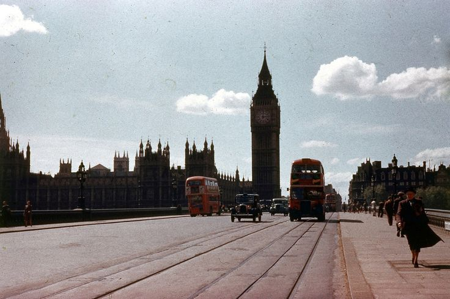
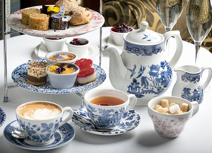
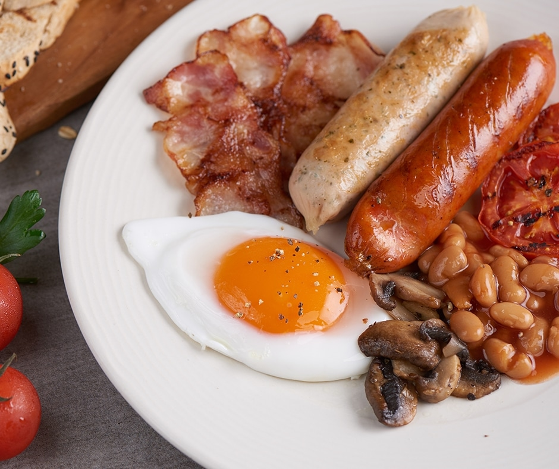

Plato Típico: Fish and Chips

El Fish and Chips es un plato típico inglés, consistente en pescado rebozado y frito acompañado de papas fritas. Se sirve comúnmente en papel y es una de las comidas más populares del país.
Historia
Desde la época medieval, los ingleses preparaban estofados, panes y tartas. Durante el Imperio Británico, se integraron ingredientes de otras culturas como especias y té. En el siglo XIX, el té de la tarde se volvió tradición con pasteles y sándwiches.
Ingredientes Comunes
Pescado rebozado y frito acompañado de papas fritas. También destacan el pan, mantequilla, carnes, té y salsas tradicionales. La gastronomía inglesa se basa en comidas caseras y contundentes, ideales para su clima frío.